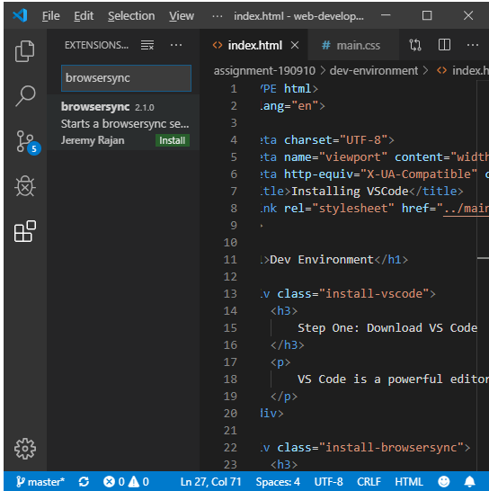
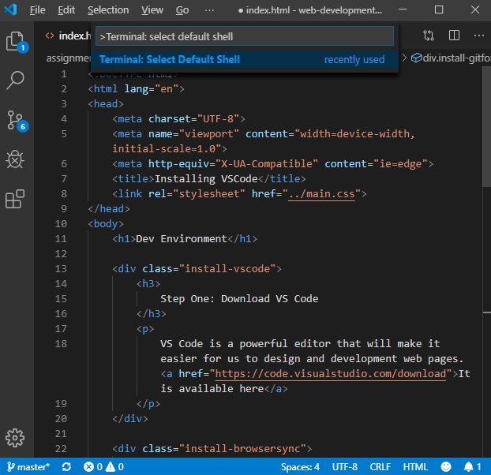

VS Code is a powerful editor that will make it easier for us to design and development web pages. It is available here
Browsersync is a tool within VS Code to preview our work. To install it, click on the grid at the very left of VS Code (called "Extensions"), and type in "browsersync". To use it in VS Code, right click on your folder and select "BrowserSync start".
Git for Windows will allow us to push (and publish) our work on our Github sites. As the name would imply, this is what you need if you're using Windows; for MacOS, see Atlassian.com. Download it from the above link, and once you open the file click "yes" every time it prompts you (you'll have to click "yes" quite a few times).
There is one last step to use it in VS Code: hold the "control" and "shift" keys and then press "p". You'll see an input box show up at the top of VS Code. Type in "terminal: select default shell" and hit enter. It will give you another set of options, and select "Git BASH". Then you're done.
